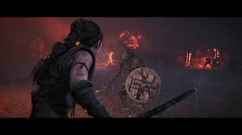

Senua's Saga: Hellblade II es la esperada secuela de Hellblade: Senua's Sacrifice, un juego de acción y aventura desarrollado por Ninja Theory. Anunciado oficialmente en 2019 y con su lanzamiento programado para las consolas de nueva generación, Hellblade II continúa la historia de Senua, una guerrera celta que lucha contra las fuerzas oscuras mientras enfrenta sus propias batallas mentales.
¿De qué trata Senua's Saga: Hellblade II?
El juego sigue a Senua, una joven guerrera que sufre de trastornos mentales, como la psicosis, mientras se enfrenta a un mundo lleno de mitología nórdica, oscuridad y criaturas terroríficas. En Hellblade: Senua's Sacrifice, los jugadores exploraron su viaje en busca del alma de su amado, Dillion, mientras luchaba contra sus demonios internos y externos. En esta secuela, Senua's Saga: Hellblade II profundiza en la exploración del trauma psicológico de la protagonista, mientras enfrenta nuevas amenazas, tanto sobrenaturales como dentro de su propia mente.
Al igual que su predecesor, Hellblade II promete una experiencia profundamente inmersiva y emocional, utilizando innovadoras técnicas de captura de movimiento y sonido para representar de manera realista los trastornos mentales y las percepciones distorsionadas de Senua. La historia de la secuela, que sigue explorando los mitos y leyendas nórdicas, promete una mayor escala y una narrativa aún más rica, con una atmósfera oscura y épica.
